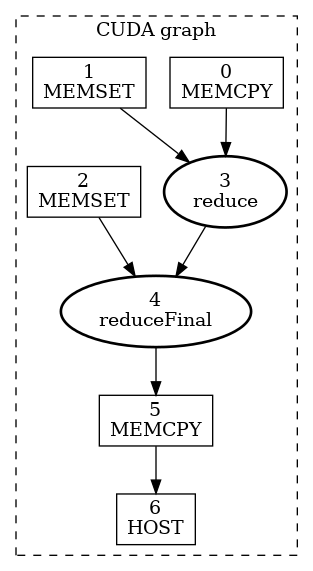
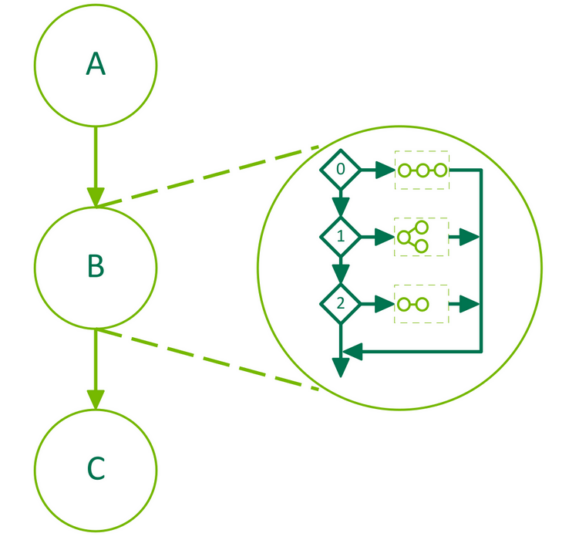
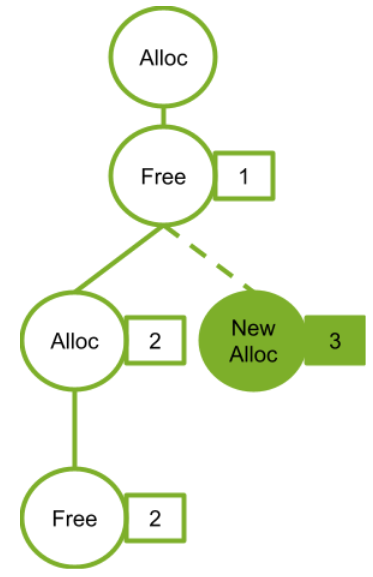
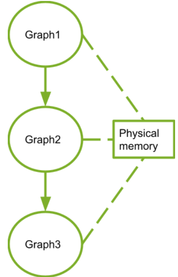
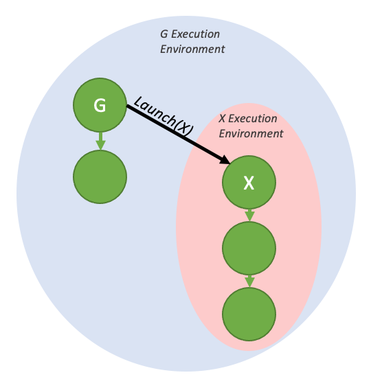
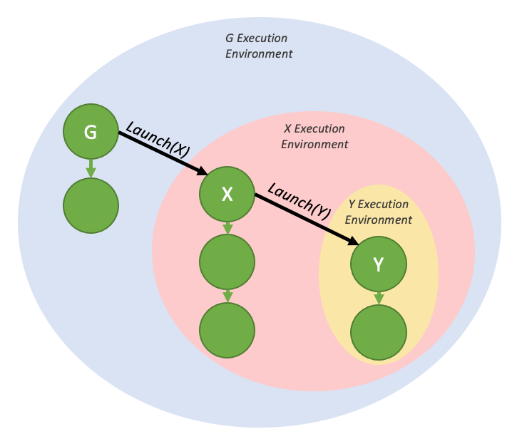
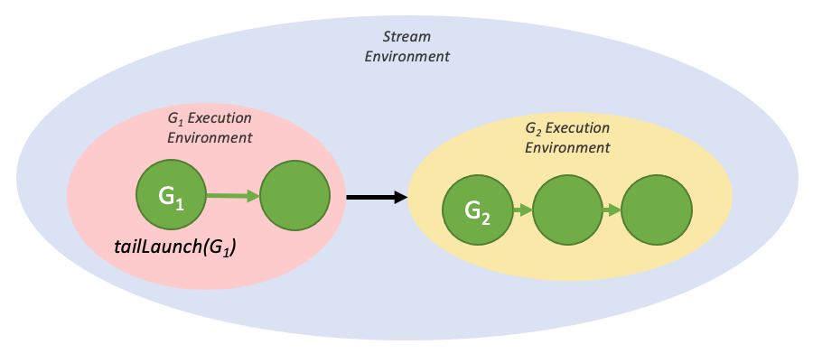
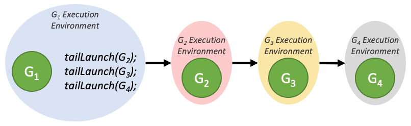

4.2. CUDA 图#
CUDA 图为 CUDA 中的工作提交提供了另一种模型。图由一系列操作（如 kernel 启动、数据搬运等）及其依赖关系构成，并且其定义与执行相分离。这样图可以定义一次、反复启动。将“图定义”与“图执行”分离可带来多项优化：其一，由于大量准备工作提前完成，相比流可降低 CPU 启动开销；其二，向 CUDA 提供完整工作流后，可启用一些在流的分段提交机制下难以实现的优化。
要理解图可实现的优化，可以先看流中的情形：当你把一个 kernel 放入流时，主机驱动会执行一系列准备步骤，以便在 GPU 上执行该 kernel。这些设置与启动所需操作属于每次发射 kernel 都必须支付的开销。对于执行时间很短的 GPU kernel，这类开销可能占端到端总时长的很大比例。若把会被重复启动的完整工作流封装为 CUDA 图，就可以在实例化阶段为整张图一次性支付这些开销，之后图本身可用极低额外开销反复启动。
4.2.1. 图结构#
图中的一个操作对应一个节点，操作之间的依赖关系对应边。这些依赖关系约束了操作的执行顺序。
当某操作所依赖节点都完成后，该操作可在任意时机被调度执行。具体调度由 CUDA 系统负责。
4.2.1.1. 节点类型#
图节点可以是以下类型之一：
kernel
CPU 函数调用
内存拷贝
memset
空节点
waiting on a CUDA Event
recording a CUDA Event
signalling an external semaphore
waiting on an external semaphore
子图：用于执行独立嵌套图，如下图所示。

Figure 21 Child Graph Example#
4.2.1.2. 边数据#
CUDA 12.3 introduced edge data on CUDA Graphs. At this time, the only use for non-default edge data is enabling Programmatic Dependent Launch.
Generally speaking, edge data modifies a dependency specified by an edge and consists of three parts: an outgoing port, an incoming port, and a type. An outgoing port specifies when an associated edge is triggered. An incoming port specifies what portion of a node is dependent on an associated edge. A type modifies the relation between the endpoints.
Port values are specific to node type and direction, and edge types may be restricted to specific node types. In all cases, zero-initialized edge data represents default behavior. Outgoing port 0 waits on an entire task, incoming port 0 blocks an entire task, and edge type 0 is associated with a full dependency with memory synchronizing behavior.
Edge data is optionally specified in various graph APIs via a parallel array to the associated nodes. If it is omitted as an
input parameter, zero-initialized data is used. If it is omitted as an output (query) parameter, the API accepts this if the
edge data being ignored is all zero-initialized, and returns cudaErrorLossyQuery if the call would discard information.
Edge data is also available in some stream capture APIs: cudaStreamBeginCaptureToGraph(), cudaStreamGetCaptureInfo(),
and cudaStreamUpdateCaptureDependencies(). In these cases, there is not yet a downstream node. The data is associated with
a dangling edge (half edge) which will either be connected to a future captured node or discarded at termination of stream capture.
Note that some edge types do not wait on full completion of the upstream node. These edges are ignored when considering if a
stream capture has been fully rejoined to the origin stream, and cannot be discarded at the end of capture. See Stream Capture.
No node types define additional incoming ports, and only kernel nodes define additional outgoing ports. There is
one non-default dependency type, cudaGraphDependencyTypeProgrammatic, which is used to enable Programmatic Dependent Launch between two kernel nodes.
4.2.2. 图的构建与运行#
使用图进行工作提交可分为三个明确阶段：定义、实例化、执行。
During the definition or creation phase, a program creates a description of the operations in the graph along with the dependencies between them.
Instantiation takes a snapshot of the graph template, validates it, and performs much of the setup and initialization of work with the aim of minimizing what needs to be done at launch. The resulting instance is known as an executable graph.
An executable graph may be launched into a stream, similar to any other CUDA work. It may be launched any number of times without repeating the instantiation.
4.2.2.1. 图创建#
图可通过两种机制创建：显式 Graph API 与流捕获。
4.2.2.1.1. 图 API#
下面给出一个创建下图所示图结构的示例（省略声明与样板代码）。请注意：使用 cudaGraphCreate() 创建图，使用 cudaGraphAddNode() 添加 kernel 节点及其依赖。所有可用于添加节点与依赖的函数请参考 CUDA Runtime API 文档。

Figure 22 Creating a Graph Using Graph APIs Example#
// Create the graph - it starts out empty
cudaGraphCreate(&graph, 0);
// Create the nodes and their dependencies
cudaGraphNode_t nodes[4];
cudaGraphNodeParams kParams = { cudaGraphNodeTypeKernel };
kParams.kernel.func = (void *)kernelName;
kParams.kernel.gridDim.x = kParams.kernel.gridDim.y = kParams.kernel.gridDim.z = 1;
kParams.kernel.blockDim.x = kParams.kernel.blockDim.y = kParams.kernel.blockDim.z = 1;
cudaGraphAddNode(&nodes[0], graph, NULL, NULL, 0, &kParams);
cudaGraphAddNode(&nodes[1], graph, &nodes[0], NULL, 1, &kParams);
cudaGraphAddNode(&nodes[2], graph, &nodes[0], NULL, 1, &kParams);
cudaGraphAddNode(&nodes[3], graph, &nodes[1], NULL, 2, &kParams);
上例通过 4 个带依赖关系的 kernel 节点演示了一个非常简单图的构建。在典型应用中，还需加入内存操作节点，如 cudaGraphAddMemcpyNode() 等。关于所有用于添加节点的图 API 函数，请参阅 CUDA Runtime API 文档。
4.2.2.1.2. 流捕获#
流捕获提供了一种从现有基于流的 API 构建图的机制。将一段向流提交工作的代码（包括已有代码）放在 cudaStreamBeginCapture() 与 cudaStreamEndCapture() 调用之间，即可捕获为图。如下所示。
cudaGraph_t graph;
cudaStreamBeginCapture(stream);
kernel_A<<< ..., stream >>>(...);
kernel_B<<< ..., stream >>>(...);
libraryCall(stream);
kernel_C<<< ..., stream >>>(...);
cudaStreamEndCapture(stream, &graph);
调用 cudaStreamBeginCapture() 会将流置于捕获模式。流处于捕获模式时，提交到该流的工作不会被入队执行，而是追加到一张正在逐步构建的内部图中。随后通过调用 cudaStreamEndCapture() 返回该图，并结束该流的捕获模式。由流捕获正在构建的图称为捕获图。
除 cudaStreamLegacy（“NULL 流”）外，流捕获可用于任意 CUDA 流。注意它可以用于 cudaStreamPerThread。若程序使用 legacy 流，通常可将 stream 0 重定义为 per-thread 流而不改变功能行为。参见 阻塞与非阻塞流及默认流。
可通过 cudaStreamIsCapturing() 查询某个流是否处于捕获状态。
也可通过 cudaStreamBeginCaptureToGraph() 将工作捕获到已有图中。此时不会捕获到内部图，而是捕获到用户提供的图对象。
4.2.2.1.2.1. 跨流依赖与事件#
流捕获可处理由 cudaEventRecord() 与 cudaStreamWaitEvent() 表达的跨流依赖，前提是被等待事件已记录到同一捕获图中。
当事件记录在处于捕获模式的流上时，会产生一个被捕获事件。该事件代表捕获图中的一组节点。
当某流等待一个被捕获事件时，若该流尚未处于捕获模式，则会被置入捕获模式；并且该流后续条目会额外依赖该被捕获事件对应节点。由此两条流会被捕获到同一捕获图中。
在流捕获中存在跨流依赖时，cudaStreamEndCapture() 仍必须在调用 cudaStreamBeginCapture() 的同一条流上执行，该流称为源流。由于事件依赖而被捕获到同一捕获图的其他流，也必须回并到源流。如下例所示。调用 cudaStreamEndCapture() 后，属于同一捕获图的所有流都会退出捕获模式。若未回并到源流，将导致整体捕获失败。
// stream1 is the origin stream
cudaStreamBeginCapture(stream1);
kernel_A<<< ..., stream1 >>>(...);
// Fork into stream2
cudaEventRecord(event1, stream1);
cudaStreamWaitEvent(stream2, event1);
kernel_B<<< ..., stream1 >>>(...);
kernel_C<<< ..., stream2 >>>(...);
// Join stream2 back to origin stream (stream1)
cudaEventRecord(event2, stream2);
cudaStreamWaitEvent(stream1, event2);
kernel_D<<< ..., stream1 >>>(...);
// End capture in the origin stream
cudaStreamEndCapture(stream1, &graph);
// stream1 and stream2 no longer in capture mode
上述代码返回的图见 图 22。
Note
当流退出捕获模式后，该流中下一个非捕获条目（若存在）仍会依赖此前最近的非捕获条目，即使两者间的中间条目已被移除。
4.2.2.1.2.2. 禁止与未处理操作#
对“正在捕获的流”或“被捕获事件”做同步或执行状态查询是无效的，因为它们并不代表已入队执行的条目。同样，若某个更大范围句柄包含活动流捕获（例如关联流处于捕获模式的设备或上下文句柄），对其进行执行状态查询或同步也无效。
当同一上下文中的任意流正在被捕获，且该流并非以 cudaStreamNonBlocking 创建时，任何对 legacy 流的使用都无效。原因是 legacy 流句柄始终涵盖这些其他流；向 legacy 流入队会建立对被捕获流的依赖，而对其查询/同步也会间接查询/同步被捕获流。
因此在此情况下调用同步 API 同样无效。一个典型同步 API 是 cudaMemcpy()：它会向 legacy 流入队工作，并在返回前对其同步。
Note
一般规则是：当某依赖关系会把“已捕获项”与“未捕获且已入队执行项”连接起来时，CUDA 倾向返回错误而非忽略该依赖。唯一例外是流进入或退出捕获模式时：这会切断模式切换前后紧邻条目之间的依赖关系。
若在一个正在捕获且关联到“不同捕获图”的流上，等待某个被捕获事件来合并两张独立捕获图，这是无效的。并且在被捕获流上等待一个“未捕获事件”而不指定 cudaEventWaitExternal 标志同样无效。
少数向流中入队异步操作的 API 目前不受图支持；若在被捕获流上调用会返回错误，例如 cudaStreamAttachMemAsync()。
4.2.2.1.2.3. Invalidation#
在流捕获期间尝试无效操作时，相关捕获图都会被置为无效。一旦捕获图失效，继续使用该图关联的被捕获流或被捕获事件都会无效并返回错误，直到调用 cudaStreamEndCapture() 结束捕获。该调用会让关联流退出捕获模式，但也会返回错误值与 NULL 图。
4.2.2.1.2.4. Capture Introspection#
可使用 cudaStreamGetCaptureInfo() 检查活动流捕获操作。该 API 允许用户获取捕获状态、捕获唯一 ID（进程内唯一）、底层图对象，以及该流中下一个将被捕获节点的依赖/边数据。利用这些依赖信息可拿到该流最近一次捕获节点的句柄。
4.2.2.1.3. Putting It All Together#
The example in Figure 22 is a simplistic example intended to show a small graph conceptually. In an application that utilizes CUDA graphs, there is more complexity to using either the graph API or stream capture. The following code snippet shows a side by side comparison of the Graph API and Stream Capture to create a CUDA graph to execute a simple two stage reduction algorithm.
Figure 23 is an illustration of this CUDA graph and was generated using the cudaGraphDebugDotPrint function applied to the code below, with small adjustments for readability, and then rendered using Graphviz.
{kind=link}

Figure 23 CUDA graph example using two stage reduction kernel#
void cudaGraphsManual(float *inputVec_h,
float *inputVec_d,
double *outputVec_d,
double *result_d,
size_t inputSize,
size_t numOfBlocks)
{
cudaStream_t streamForGraph;
cudaGraph_t graph;
std::vector<cudaGraphNode_t> nodeDependencies;
cudaGraphNode_t memcpyNode, kernelNode, memsetNode;
double result_h = 0.0;
cudaStreamCreate(&streamForGraph));
cudaKernelNodeParams kernelNodeParams = {0};
cudaMemcpy3DParms memcpyParams = {0};
cudaMemsetParams memsetParams = {0};
memcpyParams.srcArray = NULL;
memcpyParams.srcPos = make_cudaPos(0, 0, 0);
memcpyParams.srcPtr = make_cudaPitchedPtr(inputVec_h, sizeof(float) * inputSize, inputSize, 1);
memcpyParams.dstArray = NULL;
memcpyParams.dstPos = make_cudaPos(0, 0, 0);
memcpyParams.dstPtr = make_cudaPitchedPtr(inputVec_d, sizeof(float) * inputSize, inputSize, 1);
memcpyParams.extent = make_cudaExtent(sizeof(float) * inputSize, 1, 1);
memcpyParams.kind = cudaMemcpyHostToDevice;
memsetParams.dst = (void *)outputVec_d;
memsetParams.value = 0;
memsetParams.pitch = 0;
memsetParams.elementSize = sizeof(float); // elementSize can be max 4 bytes
memsetParams.width = numOfBlocks * 2;
memsetParams.height = 1;
cudaGraphCreate(&graph, 0);
cudaGraphAddMemcpyNode(&memcpyNode, graph, NULL, 0, &memcpyParams);
cudaGraphAddMemsetNode(&memsetNode, graph, NULL, 0, &memsetParams);
nodeDependencies.push_back(memsetNode);
nodeDependencies.push_back(memcpyNode);
void *kernelArgs[4] = {(void *)&inputVec_d, (void *)&outputVec_d, &inputSize, &numOfBlocks};
kernelNodeParams.func = (void *)reduce;
kernelNodeParams.gridDim = dim3(numOfBlocks, 1, 1);
kernelNodeParams.blockDim = dim3(THREADS_PER_BLOCK, 1, 1);
kernelNodeParams.sharedMemBytes = 0;
kernelNodeParams.kernelParams = (void **)kernelArgs;
kernelNodeParams.extra = NULL;
cudaGraphAddKernelNode(
&kernelNode, graph, nodeDependencies.data(), nodeDependencies.size(), &kernelNodeParams);
nodeDependencies.clear();
nodeDependencies.push_back(kernelNode);
memset(&memsetParams, 0, sizeof(memsetParams));
memsetParams.dst = result_d;
memsetParams.value = 0;
memsetParams.elementSize = sizeof(float);
memsetParams.width = 2;
memsetParams.height = 1;
cudaGraphAddMemsetNode(&memsetNode, graph, NULL, 0, &memsetParams);
nodeDependencies.push_back(memsetNode);
memset(&kernelNodeParams, 0, sizeof(kernelNodeParams));
kernelNodeParams.func = (void *)reduceFinal;
kernelNodeParams.gridDim = dim3(1, 1, 1);
kernelNodeParams.blockDim = dim3(THREADS_PER_BLOCK, 1, 1);
kernelNodeParams.sharedMemBytes = 0;
void *kernelArgs2[3] = {(void *)&outputVec_d, (void *)&result_d, &numOfBlocks};
kernelNodeParams.kernelParams = kernelArgs2;
kernelNodeParams.extra = NULL;
cudaGraphAddKernelNode(
&kernelNode, graph, nodeDependencies.data(), nodeDependencies.size(), &kernelNodeParams);
nodeDependencies.clear();
nodeDependencies.push_back(kernelNode);
memset(&memcpyParams, 0, sizeof(memcpyParams));
memcpyParams.srcArray = NULL;
memcpyParams.srcPos = make_cudaPos(0, 0, 0);
memcpyParams.srcPtr = make_cudaPitchedPtr(result_d, sizeof(double), 1, 1);
memcpyParams.dstArray = NULL;
memcpyParams.dstPos = make_cudaPos(0, 0, 0);
memcpyParams.dstPtr = make_cudaPitchedPtr(&result_h, sizeof(double), 1, 1);
memcpyParams.extent = make_cudaExtent(sizeof(double), 1, 1);
memcpyParams.kind = cudaMemcpyDeviceToHost;
cudaGraphAddMemcpyNode(&memcpyNode, graph, nodeDependencies.data(), nodeDependencies.size(), &memcpyParams);
nodeDependencies.clear();
nodeDependencies.push_back(memcpyNode);
cudaGraphNode_t hostNode;
cudaHostNodeParams hostParams = {0};
hostParams.fn = myHostNodeCallback;
callBackData_t hostFnData;
hostFnData.data = &result_h;
hostFnData.fn_name = "cudaGraphsManual";
hostParams.userData = &hostFnData;
cudaGraphAddHostNode(&hostNode, graph, nodeDependencies.data(), nodeDependencies.size(), &hostParams);
}
void cudaGraphsUsingStreamCapture(float *inputVec_h,
float *inputVec_d,
double *outputVec_d,
double *result_d,
size_t inputSize,
size_t numOfBlocks)
{
cudaStream_t stream1, stream2, stream3, streamForGraph;
cudaEvent_t forkStreamEvent, memsetEvent1, memsetEvent2;
cudaGraph_t graph;
double result_h = 0.0;
cudaStreamCreate(&stream1);
cudaStreamCreate(&stream2);
cudaStreamCreate(&stream3);
cudaStreamCreate(&streamForGraph);
cudaEventCreate(&forkStreamEvent);
cudaEventCreate(&memsetEvent1);
cudaEventCreate(&memsetEvent2);
cudaStreamBeginCapture(stream1, cudaStreamCaptureModeGlobal);
cudaEventRecord(forkStreamEvent, stream1);
cudaStreamWaitEvent(stream2, forkStreamEvent, 0);
cudaStreamWaitEvent(stream3, forkStreamEvent, 0);
cudaMemcpyAsync(inputVec_d, inputVec_h, sizeof(float) * inputSize, cudaMemcpyDefault, stream1);
cudaMemsetAsync(outputVec_d, 0, sizeof(double) * numOfBlocks, stream2);
cudaEventRecord(memsetEvent1, stream2);
cudaMemsetAsync(result_d, 0, sizeof(double), stream3);
cudaEventRecord(memsetEvent2, stream3);
cudaStreamWaitEvent(stream1, memsetEvent1, 0);
reduce<<<numOfBlocks, THREADS_PER_BLOCK, 0, stream1>>>(inputVec_d, outputVec_d, inputSize, numOfBlocks);
cudaStreamWaitEvent(stream1, memsetEvent2, 0);
reduceFinal<<<1, THREADS_PER_BLOCK, 0, stream1>>>(outputVec_d, result_d, numOfBlocks);
cudaMemcpyAsync(&result_h, result_d, sizeof(double), cudaMemcpyDefault, stream1);
callBackData_t hostFnData = {0};
hostFnData.data = &result_h;
hostFnData.fn_name = "cudaGraphsUsingStreamCapture";
cudaHostFn_t fn = myHostNodeCallback;
cudaLaunchHostFunc(stream1, fn, &hostFnData);
cudaStreamEndCapture(stream1, &graph);
}
4.2.2.2. Graph Instantiation#
Once a graph has been created, either by the use of the graph API or stream capture, the graph must be instantiated to create an executable graph, which can then be launched. Assuming the cudaGraph_t graph has been created successfully, the following code will instantiate the graph and create the executable graph cudaGraphExec_t graphExec:
cudaGraphExec_t graphExec;
cudaGraphInstantiate(&graphExec, graph, NULL, NULL, 0);
4.2.2.3. Graph Execution#
After a graph has been created and instantiated to create an executable graph, it can be launched. Assuming the cudaGraphExec_t graphExec has been created successfully, the following code snippet will launch the graph into the specified stream:
cudaGraphLaunch(graphExec, stream);
Pulling it all together and using the stream capture example from Section 4.2.2.1.2, the following code snippet will create a graph, instantiate it, and launch it:
cudaGraph_t graph;
cudaStreamBeginCapture(stream);
kernel_A<<< ..., stream >>>(...);
kernel_B<<< ..., stream >>>(...);
libraryCall(stream);
kernel_C<<< ..., stream >>>(...);
cudaStreamEndCapture(stream, &graph);
cudaGraphExec_t graphExec;
cudaGraphInstantiate(&graphExec, graph, NULL, NULL, 0);
cudaGraphLaunch(graphExec, stream);
4.2.3. Updating Instantiated Graphs#
When a workflow changes, the graph becomes out of date and must be modified. Major changes to graph structure (such as topology or node types) require re-instantiation because topology-related optimizations must be re-applied. However, it is common for only node parameters (such as kernel parameters and memory addresses) to change while the graph topology remains the same. For this case, CUDA provides a lightweight “Graph Update” mechanism that allows certain node parameters to be modified in-place without rebuilding the entire graph, which is much more efficient than re-instantiation.
Updates take effect the next time the graph is launched, so they do not impact previous graph launches, even if they are running at the time of the update. A graph may be updated and relaunched repeatedly, so multiple updates/launches can be queued on a stream.
CUDA provides two mechanisms for updating instantiated graph parameters, whole graph update and individual node update. Whole graph update allows the user to supply a topologically identical cudaGraph_t object whose nodes contain updated parameters. Individual node update allows the user to explicitly update the parameters of individual nodes. Using an updated cudaGraph_t is more convenient when a large number of nodes are being updated, or when the graph topology is unknown to the caller (i.e., The graph resulted from stream capture of a library call). Using individual node update is preferred when the number of changes is small and the user has the handles to the nodes requiring updates. Individual node update skips the topology checks and comparisons for unchanged nodes, so it can be more efficient in many cases.
CUDA also provides a mechanism for enabling and disabling individual nodes without affecting their current parameters.
The following sections explain each approach in more detail.
4.2.3.1. Whole Graph Update#
cudaGraphExecUpdate() allows an instantiated graph (the “original graph”) to be updated with the parameters from a topologically identical graph (the “updating” graph). The topology of the updating graph must be identical to the original graph used to instantiate the cudaGraphExec_t. In addition, the order in which the dependencies are specified must match. Finally, CUDA needs to consistently order the sink nodes (nodes with no dependencies). CUDA relies on the order of specific api calls to achieve consistent sink node ordering.
More explicitly, following the following rules will cause cudaGraphExecUpdate() to pair the nodes in the original graph and the updating graph deterministically:
For any capturing stream, the API calls operating on that stream must be made in the same order, including event wait and other api calls not directly corresponding to node creation.
The API calls which directly manipulate a given graph node’s incoming edges (including captured stream APIs, node add APIs, and edge addition / removal APIs) must be made in the same order. Moreover, when dependencies are specified in arrays to these APIs, the order in which the dependencies are specified inside those arrays must match.
Sink nodes must be consistently ordered. Sink nodes are nodes without dependent nodes / outgoing edges in the final graph at the time of the
cudaGraphExecUpdate()invocation. The following operations affect sink node ordering (if present) and must (as a combined set) be made in the same order:Node add APIs resulting in a sink node.
Edge removal resulting in a node becoming a sink node.
cudaStreamUpdateCaptureDependencies(), if it removes a sink node from a capturing stream’s dependency set.cudaStreamEndCapture().
The following example shows how the API could be used to update an instantiated graph:
cudaGraphExec_t graphExec = NULL;
for (int i = 0; i < 10; i++) {
cudaGraph_t graph;
cudaGraphExecUpdateResult updateResult;
cudaGraphNode_t errorNode;
// In this example we use stream capture to create the graph.
// You can also use the Graph API to produce a graph.
cudaStreamBeginCapture(stream, cudaStreamCaptureModeGlobal);
// Call a user-defined, stream based workload, for example
do_cuda_work(stream);
cudaStreamEndCapture(stream, &graph);
// If we've already instantiated the graph, try to update it directly
// and avoid the instantiation overhead
if (graphExec != NULL) {
// If the graph fails to update, errorNode will be set to the
// node causing the failure and updateResult will be set to a
// reason code.
cudaGraphExecUpdate(graphExec, graph, &errorNode, &updateResult);
}
// Instantiate during the first iteration or whenever the update
// fails for any reason
if (graphExec == NULL || updateResult != cudaGraphExecUpdateSuccess) {
// If a previous update failed, destroy the cudaGraphExec_t
// before re-instantiating it
if (graphExec != NULL) {
cudaGraphExecDestroy(graphExec);
}
// Instantiate graphExec from graph. The error node and
// error message parameters are unused here.
cudaGraphInstantiate(&graphExec, graph, NULL, NULL, 0);
}
cudaGraphDestroy(graph);
cudaGraphLaunch(graphExec, stream);
cudaStreamSynchronize(stream);
}
A typical workflow is to create the initial cudaGraph_t using either the stream capture or graph API. The cudaGraph_t is then instantiated and launched as normal. After the initial launch, a new cudaGraph_t is created using the same method as the initial graph and cudaGraphExecUpdate() is called. If the graph update is successful, indicated by the updateResult parameter in the above example, the updated cudaGraphExec_t is launched. If the update fails for any reason, the cudaGraphExecDestroy() and cudaGraphInstantiate() are called to destroy the original cudaGraphExec_t and instantiate a new one.
It is also possible to update the cudaGraph_t nodes directly (i.e., Using cudaGraphKernelNodeSetParams()) and subsequently update the cudaGraphExec_t, however it is more efficient to use the explicit node update APIs covered in the next section.
Conditional handle flags and default values are updated as part of the graph update.
Please see the Graph API for more information on usage and current limitations.
4.2.3.2. Individual Node Update#
Instantiated graph node parameters can be updated directly. This eliminates the overhead of instantiation as well as the overhead of creating a new cudaGraph_t. If the number of nodes requiring update is small relative to the total number of nodes in the graph, it is better to update the nodes individually. The following methods are available for updating cudaGraphExec_t nodes:
API |
Node Type |
|---|---|
|
Kernel node |
|
Memory copy node |
|
Memory set node |
|
Host node |
|
Child graph node |
|
Event record node |
|
Event wait node |
|
External semaphore signal node |
|
External semaphore wait node |
Please see the Graph API for more information on usage and current limitations.
4.2.3.3. Individual Node Enable#
Kernel, memset and memcpy nodes in an instantiated graph can be enabled or disabled using the cudaGraphNodeSetEnabled() API. This allows the creation of a graph which contains a superset of the desired functionality which can be customized for each launch. The enable state of a node can be queried using the cudaGraphNodeGetEnabled() API.
A disabled node is functionally equivalent to empty node until it is re-enabled. Node parameters are not affected by enabling/disabling a node. Enable state is unaffected by individual node update or whole graph update with cudaGraphExecUpdate(). Parameter updates while the node is disabled will take effect when the node is re-enabled.
Refer to the Graph API for more information on usage and current limitations.
4.2.3.4. Graph Update Limitations#
Kernel nodes:
The owning context of the function cannot change.
A node whose function originally did not use CUDA dynamic parallelism cannot be updated to a function which uses CUDA dynamic parallelism.
cudaMemset and cudaMemcpy nodes:
The CUDA device(s) to which the operand(s) was allocated/mapped cannot change.
The source/destination memory must be allocated from the same context as the original source/destination memory.
Only 1D
cudaMemset/cudaMemcpynodes can be changed.
Additional memcpy node restrictions:
Changing either the source or destination memory type (i.e.,
cudaPitchedPtr,cudaArray_t, etc.), or the type of transfer (i.e.,cudaMemcpyKind) is not supported.
External semaphore wait nodes and record nodes:
Changing the number of semaphores is not supported.
Conditional nodes:
The order of handle creation and assignment must match between the graphs.
Changing node parameters is not supported (i.e. number of graphs in the conditional, node context, etc).
Changing parameters of nodes within the conditional body graph is subject to the rules above.
Memory nodes:
It is not possible to update a
cudaGraphExec_twith acudaGraph_tif thecudaGraph_tis currently instantiated as a differentcudaGraphExec_t.
There are no restrictions on updates to host nodes, event record nodes, or event wait nodes.
4.2.4. Conditional Graph Nodes#
Conditional nodes allow conditional execution and looping of a graph contained within the conditional node. This allows dynamic and iterative workflows to be represented completely within a graph and frees up the host CPU to perform other work in parallel.
Evaluation of the condition value is performed on the device when the dependencies of the conditional node have been met. Conditional nodes can be one of the following types:
Conditional IF nodes execute their body graph once if the condition value is non-zero when the node is executed. An optional second body graph can be provided and this will be executed once if the condition value is zero when the node is executed.
Conditional WHILE nodes execute their body graph if the condition value is non-zero when the node is executed and will continue to execute their body graph until the condition value is zero.
Conditional SWITCH nodes execute the zero-indexed nth body graph once if the condition value is equal to n. If the condition value does not correspond to a body graph, no body graph is launched.
A condition value is accessed by a conditional handle , which must be created before the node. The condition value can be set by device code using cudaGraphSetConditional(). A default value, applied on each graph launch, can also be specified when the handle is created.
When the conditional node is created, an empty graph is created and the handle is returned to the user so that the graph can be populated. This conditional body graph can be populated using either the graph APIs or cudaStreamBeginCaptureToGraph().
Conditional nodes can be nested.
4.2.4.1. Conditional Handles#
A condition value is represented by cudaGraphConditionalHandle and is created by cudaGraphConditionalHandleCreate().
The handle must be associated with a single conditional node. Handles cannot be destroyed and as such there is no need to keep track of them.
If cudaGraphCondAssignDefault is specified when the handle is created, the condition value will be initialized to the specified default at the beginning of each graph execution. If this flag is not provided, the condition value is undefined at the start of each graph execution and code should not assume that the condition value persists across executions.
The default value and flags associated with a handle will be updated during whole graph update.
4.2.4.2. Conditional Node Body Graph Requirements#
General requirements:
The graph’s nodes must all reside on a single device.
The graph can only contain kernel nodes, empty nodes, memcpy nodes, memset nodes, child graph nodes, and conditional nodes.
Kernel nodes:
Use of CUDA Dynamic Parallelism or Device Graph Launch by kernels in the graph is not permitted.
Cooperative launches are permitted so long as MPS is not in use.
Memcpy/Memset nodes:
Only copies/memsets involving device memory and/or pinned device-mapped host memory are permitted.
Copies/memsets involving CUDA arrays are not permitted.
Both operands must be accessible from the current device at time of instantiation. Note that the copy operation will be performed from the device on which the graph resides, even if it is targeting memory on another device.
4.2.4.3. Conditional IF Nodes#
The body graph of an IF node will be executed once if the condition is non-zero when the node is executed. The following diagram depicts a 3 node graph where the middle node, B, is a conditional node:

Figure 24 Conditional IF Node#
The following code illustrates the creation of a graph containing an IF conditional node. The default value of the condition is set using an upstream kernel. The body of the conditional is populated using the graph API.
__global__ void setHandle(cudaGraphConditionalHandle handle, int value)
{
...
// Set the condition value to the value passed to the kernel
cudaGraphSetConditional(handle, value);
...
}
void graphSetup() {
cudaGraph_t graph;
cudaGraphExec_t graphExec;
cudaGraphNode_t node;
void *kernelArgs[2];
int value = 1;
// Create the graph
cudaGraphCreate(&graph, 0);
// Create the conditional handle; because no default value is provided, the condition value is undefined at the start of each graph execution
cudaGraphConditionalHandle handle;
cudaGraphConditionalHandleCreate(&handle, graph);
// Use a kernel upstream of the conditional to set the handle value
cudaGraphNodeParams params = { cudaGraphNodeTypeKernel };
params.kernel.func = (void *)setHandle;
params.kernel.gridDim.x = params.kernel.gridDim.y = params.kernel.gridDim.z = 1;
params.kernel.blockDim.x = params.kernel.blockDim.y = params.kernel.blockDim.z = 1;
params.kernel.kernelParams = kernelArgs;
kernelArgs[0] = &handle;
kernelArgs[1] = &value;
cudaGraphAddNode(&node, graph, NULL, 0, ¶ms);
// Create and add the conditional node
cudaGraphNodeParams cParams = { cudaGraphNodeTypeConditional };
cParams.conditional.handle = handle;
cParams.conditional.type = cudaGraphCondTypeIf;
cParams.conditional.size = 1; // There is only an "if" body graph
cudaGraphAddNode(&node, graph, &node, 1, &cParams);
// Get the body graph of the conditional node
cudaGraph_t bodyGraph = cParams.conditional.phGraph_out[0];
// Populate the body graph of the IF conditional node
...
cudaGraphAddNode(&node, bodyGraph, NULL, 0, ¶ms);
// Instantiate and launch the graph
cudaGraphInstantiate(&graphExec, graph, NULL, NULL, 0);
cudaGraphLaunch(graphExec, 0);
cudaDeviceSynchronize();
// Clean up
cudaGraphExecDestroy(graphExec);
cudaGraphDestroy(graph);
}
IF nodes can also have an optional second body graph which is executed once when the node is executed if the condition value is zero.
void graphSetup() {
cudaGraph_t graph;
cudaGraphExec_t graphExec;
cudaGraphNode_t node;
void *kernelArgs[2];
int value = 1;
// Create the graph
cudaGraphCreate(&graph, 0);
// Create the conditional handle; because no default value is provided, the condition value is undefined at the start of each graph execution
cudaGraphConditionalHandle handle;
cudaGraphConditionalHandleCreate(&handle, graph);
// Use a kernel upstream of the conditional to set the handle value
cudaGraphNodeParams params = { cudaGraphNodeTypeKernel };
params.kernel.func = (void *)setHandle;
params.kernel.gridDim.x = params.kernel.gridDim.y = params.kernel.gridDim.z = 1;
params.kernel.blockDim.x = params.kernel.blockDim.y = params.kernel.blockDim.z = 1;
params.kernel.kernelParams = kernelArgs;
kernelArgs[0] = &handle;
kernelArgs[1] = &value;
cudaGraphAddNode(&node, graph, NULL, 0, ¶ms);
// Create and add the IF conditional node
cudaGraphNodeParams cParams = { cudaGraphNodeTypeConditional };
cParams.conditional.handle = handle;
cParams.conditional.type = cudaGraphCondTypeIf;
cParams.conditional.size = 2; // There is both an "if" and an "else" body graph
cudaGraphAddNode(&node, graph, &node, 1, &cParams);
// Get the body graphs of the conditional node
cudaGraph_t ifBodyGraph = cParams.conditional.phGraph_out[0];
cudaGraph_t elseBodyGraph = cParams.conditional.phGraph_out[1];
// Populate the body graphs of the IF conditional node
...
cudaGraphAddNode(&node, ifBodyGraph, NULL, 0, ¶ms);
...
cudaGraphAddNode(&node, elseBodyGraph, NULL, 0, ¶ms);
// Instantiate and launch the graph
cudaGraphInstantiate(&graphExec, graph, NULL, NULL, 0);
cudaGraphLaunch(graphExec, 0);
cudaDeviceSynchronize();
// Clean up
cudaGraphExecDestroy(graphExec);
cudaGraphDestroy(graph);
}
4.2.4.4. Conditional WHILE Nodes#
The body graph of a WHILE node will be executed as long as the condition is non-zero. The condition will be evaluated when the node is executed and after completion of the body graph. The following diagram depicts a 3 node graph where the middle node, B, is a conditional node:

Figure 25 Conditional WHILE Node#
The following code illustrates the creation of a graph containing a WHILE conditional node. The handle is created using cudaGraphCondAssignDefault to avoid the need for an upstream kernel. The body of the conditional is populated using the graph API.
__global__ void loopKernel(cudaGraphConditionalHandle handle, char *dPtr)
{
// Decrement the value of dPtr and set the condition value to 0 once dPtr is 0
if (--(*dPtr) == 0) {
cudaGraphSetConditional(handle, 0);
}
}
void graphSetup() {
cudaGraph_t graph;
cudaGraphExec_t graphExec;
cudaGraphNode_t node;
void *kernelArgs[2];
// Allocate a byte of device memory to use as input
char *dPtr;
cudaMalloc((void **)&dPtr, 1);
// Create the graph
cudaGraphCreate(&graph, 0);
// Create the conditional handle with a default value of 1
cudaGraphConditionalHandle handle;
cudaGraphConditionalHandleCreate(&handle, graph, 1, cudaGraphCondAssignDefault);
// Create and add the WHILE conditional node
cudaGraphNodeParams cParams = { cudaGraphNodeTypeConditional };
cParams.conditional.handle = handle;
cParams.conditional.type = cudaGraphCondTypeWhile;
cParams.conditional.size = 1;
cudaGraphAddNode(&node, graph, NULL, 0, &cParams);
// Get the body graph of the conditional node
cudaGraph_t bodyGraph = cParams.conditional.phGraph_out[0];
// Populate the body graph of the conditional node
cudaGraphNodeParams params = { cudaGraphNodeTypeKernel };
params.kernel.func = (void *)loopKernel;
params.kernel.gridDim.x = params.kernel.gridDim.y = params.kernel.gridDim.z = 1;
params.kernel.blockDim.x = params.kernel.blockDim.y = params.kernel.blockDim.z = 1;
params.kernel.kernelParams = kernelArgs;
kernelArgs[0] = &handle;
kernelArgs[1] = &dPtr;
cudaGraphAddNode(&node, bodyGraph, NULL, 0, ¶ms);
// Initialize device memory, instantiate, and launch the graph
cudaMemset(dPtr, 10, 1); // Set dPtr to 10; the loop will run until dPtr is 0
cudaGraphInstantiate(&graphExec, graph, NULL, NULL, 0);
cudaGraphLaunch(graphExec, 0);
cudaDeviceSynchronize();
// Clean up
cudaGraphExecDestroy(graphExec);
cudaGraphDestroy(graph);
cudaFree(dPtr);
}
4.2.4.5. Conditional SWITCH Nodes#
The zero-indexed nth body graph of a SWITCH node will be executed once if the condition is equal to n when the node is executed. The following diagram depicts a 3 node graph where the middle node, B, is a conditional node:

Figure 26 Conditional SWITCH Node#
The following code illustrates the creation of a graph containing a SWITCH conditional node. The value of the condition is set using an upstream kernel. The bodies of the conditional are populated using the graph API.
__global__ void setHandle(cudaGraphConditionalHandle handle, int value)
{
...
// Set the condition value to the value passed to the kernel
cudaGraphSetConditional(handle, value);
...
}
void graphSetup() {
cudaGraph_t graph;
cudaGraphExec_t graphExec;
cudaGraphNode_t node;
void *kernelArgs[2];
int value = 1;
// Create the graph
cudaGraphCreate(&graph, 0);
// Create the conditional handle; because no default value is provided, the condition value is undefined at the start of each graph execution
cudaGraphConditionalHandle handle;
cudaGraphConditionalHandleCreate(&handle, graph);
// Use a kernel upstream of the conditional to set the handle value
cudaGraphNodeParams params = { cudaGraphNodeTypeKernel };
params.kernel.func = (void *)setHandle;
params.kernel.gridDim.x = params.kernel.gridDim.y = params.kernel.gridDim.z = 1;
params.kernel.blockDim.x = params.kernel.blockDim.y = params.kernel.blockDim.z = 1;
params.kernel.kernelParams = kernelArgs;
kernelArgs[0] = &handle;
kernelArgs[1] = &value;
cudaGraphAddNode(&node, graph, NULL, 0, ¶ms);
// Create and add the conditional SWITCH node
cudaGraphNodeParams cParams = { cudaGraphNodeTypeConditional };
cParams.conditional.handle = handle;
cParams.conditional.type = cudaGraphCondTypeSwitch;
cParams.conditional.size = 5;
cudaGraphAddNode(&node, graph, &node, 1, &cParams);
// Get the body graphs of the conditional node
cudaGraph_t *bodyGraphs = cParams.conditional.phGraph_out;
// Populate the body graphs of the SWITCH conditional node
...
cudaGraphAddNode(&node, bodyGraphs[0], NULL, 0, ¶ms);
...
cudaGraphAddNode(&node, bodyGraphs[4], NULL, 0, ¶ms);
// Instantiate and launch the graph
cudaGraphInstantiate(&graphExec, graph, NULL, NULL, 0);
cudaGraphLaunch(graphExec, 0);
cudaDeviceSynchronize();
// Clean up
cudaGraphExecDestroy(graphExec);
cudaGraphDestroy(graph);
}
4.2.5. Graph Memory Nodes#
4.2.5.1. Introduction#
Graph memory nodes allow graphs to create and own memory allocations. Graph memory nodes have GPU ordered lifetime semantics, which dictate when memory is allowed to be accessed on the device. These GPU ordered lifetime semantics enable driver-managed memory reuse, and match those of the stream ordered allocation APIs cudaMallocAsync and cudaFreeAsync, which may be captured when creating a graph.
Graph allocations have fixed addresses over the life of a graph including repeated instantiations and launches. This allows the memory to be directly referenced by other operations within the graph without the need of a graph update, even when CUDA changes the backing physical memory. Within a graph, allocations whose graph ordered lifetimes do not overlap may use the same underlying physical memory.
CUDA may reuse the same physical memory for allocations across multiple graphs, aliasing virtual address mappings according to the GPU ordered lifetime semantics. For example when different graphs are launched into the same stream, CUDA may virtually alias the same physical memory to satisfy the needs of allocations which have single-graph lifetimes.
4.2.5.2. API Fundamentals#
Graph memory nodes are graph nodes representing either memory allocation or free actions. As a shorthand, nodes that allocate memory are called allocation nodes. Likewise, nodes that free memory are called free nodes. Allocations created by allocation nodes are called graph allocations. CUDA assigns virtual addresses for the graph allocation at node creation time. While these virtual addresses are fixed for the lifetime of the allocation node, the allocation contents are not persistent past the freeing operation and may be overwritten by accesses referring to a different allocation.
Graph allocations are considered recreated every time a graph runs. A graph allocation’s lifetime, which differs from the node’s lifetime, begins when GPU execution reaches the allocating graph node and ends when one of the following occurs:
GPU execution reaches the freeing graph node
GPU execution reaches the freeing
cudaFreeAsync()stream callimmediately upon the freeing call to
cudaFree()
Note
Graph destruction does not automatically free any live graph-allocated memory, even though it ends the lifetime of the allocation node. The allocation must subsequently be freed in another graph, or using cudaFreeAsync()/cudaFree().
Just like other graph-structure, graph memory nodes are ordered within a graph by dependency edges. A program must guarantee that operations accessing graph memory:
are ordered after the allocation node
are ordered before the operation freeing the memory
Graph allocation lifetimes begin and usually end according to GPU execution (as opposed to API invocation). GPU ordering is the order that work runs on the GPU as opposed to the order that the work is enqueued or described. Thus, graph allocations are considered ‘GPU ordered.’
4.2.5.2.1. Graph Node APIs#
Graph memory nodes may be explicitly created with the node creation API, cudaGraphAddNode. The address allocated when adding a cudaGraphNodeTypeMemAlloc node is returned to the user in the alloc::dptr field of the passed cudaGraphNodeParams structure. All operations using graph allocations inside the allocating graph must be ordered after the allocating node. Similarly, any free nodes must be ordered after all uses of the allocation within the graph. Free nodes are created using cudaGraphAddNode and a node type of cudaGraphNodeTypeMemFree.
In the following figure, there is an example graph with an alloc and a free node. Kernel nodes a, b, and c are ordered after the allocation node and before the free node such that the kernels can access the allocation. Kernel node e is not ordered after the alloc node and therefore cannot safely access the memory. Kernel node d is not ordered before the free node, therefore it cannot safely access the memory.

Figure 27 Kernel Nodes#
The following code snippet establishes the graph in this figure:
// Create the graph - it starts out empty
cudaGraphCreate(&graph, 0);
// parameters for a basic allocation
cudaGraphNodeParams params = { cudaGraphNodeTypeMemAlloc };
params.alloc.poolProps.allocType = cudaMemAllocationTypePinned;
params.alloc.poolProps.location.type = cudaMemLocationTypeDevice;
// specify device 0 as the resident device
params.alloc.poolProps.location.id = 0;
params.alloc.bytesize = size;
cudaGraphAddNode(&allocNode, graph, NULL, NULL, 0, ¶ms);
// create a kernel node that uses the graph allocation
cudaGraphNodeParams nodeParams = { cudaGraphNodeTypeKernel };
nodeParams.kernel.kernelParams[0] = params.alloc.dptr;
// ...set other kernel node parameters...
// add the kernel node to the graph
cudaGraphAddNode(&a, graph, &allocNode, 1, NULL, &nodeParams);
cudaGraphAddNode(&b, graph, &a, 1, NULL, &nodeParams);
cudaGraphAddNode(&c, graph, &a, 1, NULL, &nodeParams);
cudaGraphNode_t dependencies[2];
// kernel nodes b and c are using the graph allocation, so the freeing node must depend on them. Since the dependency of node b on node a establishes an indirect dependency, the free node does not need to explicitly depend on node a.
dependencies[0] = b;
dependencies[1] = c;
cudaGraphNodeParams freeNodeParams = { cudaGraphNodeTypeMemFree };
freeNodeParams.free.dptr = params.alloc.dptr;
cudaGraphAddNode(&freeNode, graph, dependencies, NULL, 2, freeNodeParams);
// free node does not depend on kernel node d, so it must not access the freed graph allocation.
cudaGraphAddNode(&d, graph, &c, NULL, 1, &nodeParams);
// node e does not depend on the allocation node, so it must not access the allocation. This would be true even if the freeNode depended on kernel node e.
cudaGraphAddNode(&e, graph, NULL, NULL, 0, &nodeParams);
4.2.5.2.2. Stream Capture#
Graph memory nodes can be created by capturing the corresponding stream ordered allocation and free calls cudaMallocAsync and cudaFreeAsync. In this case, the virtual addresses returned by the captured allocation API can be used by other operations inside the graph. Since the stream ordered dependencies will be captured into the graph, the ordering requirements of the stream ordered allocation APIs guarantee that the graph memory nodes will be properly ordered with respect to the captured stream operations (for correctly written stream code).
Ignoring kernel nodes d and e, for clarity, the following code snippet shows how to use stream capture to create the graph from the previous figure:
cudaMallocAsync(&dptr, size, stream1);
kernel_A<<< ..., stream1 >>>(dptr, ...);
// Fork into stream2
cudaEventRecord(event1, stream1);
cudaStreamWaitEvent(stream2, event1);
kernel_B<<< ..., stream1 >>>(dptr, ...);
// event dependencies translated into graph dependencies, so the kernel node created by the capture of kernel C will depend on the allocation node created by capturing the cudaMallocAsync call.
kernel_C<<< ..., stream2 >>>(dptr, ...);
// Join stream2 back to origin stream (stream1)
cudaEventRecord(event2, stream2);
cudaStreamWaitEvent(stream1, event2);
// Free depends on all work accessing the memory.
cudaFreeAsync(dptr, stream1);
// End capture in the origin stream
cudaStreamEndCapture(stream1, &graph);
4.2.5.2.3. Accessing and Freeing Graph Memory Outside of the Allocating Graph#
Graph allocations do not have to be freed by the allocating graph. When a graph does not free an allocation, that allocation persists beyond the execution of the graph and can be accessed by subsequent CUDA operations. These allocations may be accessed in another graph or directly using a stream operation as long as the accessing operation is ordered after the allocation through CUDA events and other stream ordering mechanisms. An allocation may subsequently be freed by regular calls to cudaFree, cudaFreeAsync, or by the launch of another graph with a corresponding free node, or a subsequent launch of the allocating graph (if it was instantiated with the graph-memory-nodes-cudagraphinstantiateflagautofreeonlaunch flag). It is illegal to access memory after it has been freed - the free operation must be ordered after all operations accessing the memory using graph dependencies, CUDA events, and other stream ordering mechanisms.
Note
Since graph allocations may share underlying physical memory, free operations must be ordered after all device operations complete. Out-of-band synchronization (such as memory-based synchronization within a compute kernel) is insufficient for ordering between memory writes and free operations. For more information, see the Virtual Aliasing Support rules relating to consistency and coherency.
The three following code snippets demonstrate accessing graph allocations outside of the allocating graph with ordering properly established by: using a single stream, using events between streams, and using events baked into the allocating and freeing graph.
First, ordering established by using a single stream:
// Contents of allocating graph
void *dptr;
cudaGraphNodeParams params = { cudaGraphNodeTypeMemAlloc };
params.alloc.poolProps.allocType = cudaMemAllocationTypePinned;
params.alloc.poolProps.location.type = cudaMemLocationTypeDevice;
params.alloc.bytesize = size;
cudaGraphAddNode(&allocNode, allocGraph, NULL, NULL, 0, ¶ms);
dptr = params.alloc.dptr;
cudaGraphInstantiate(&allocGraphExec, allocGraph, NULL, NULL, 0);
cudaGraphLaunch(allocGraphExec, stream);
kernel<<< ..., stream >>>(dptr, ...);
cudaFreeAsync(dptr, stream);
Second, ordering established by recording and waiting on CUDA events:
// Contents of allocating graph
void *dptr;
// Contents of allocating graph
cudaGraphAddNode(&allocNode, allocGraph, NULL, NULL, 0, &allocNodeParams);
dptr = allocNodeParams.alloc.dptr;
// contents of consuming/freeing graph
kernelNodeParams.kernel.kernelParams[0] = allocNodeParams.alloc.dptr;
cudaGraphAddNode(&freeNode, freeGraph, NULL, NULL, 1, dptr);
cudaGraphInstantiate(&allocGraphExec, allocGraph, NULL, NULL, 0);
cudaGraphInstantiate(&freeGraphExec, freeGraph, NULL, NULL, 0);
cudaGraphLaunch(allocGraphExec, allocStream);
// establish the dependency of stream2 on the allocation node
// note: the dependency could also have been established with a stream synchronize operation
cudaEventRecord(allocEvent, allocStream);
cudaStreamWaitEvent(stream2, allocEvent);
kernel<<< ..., stream2 >>> (dptr, ...);
// establish the dependency between the stream 3 and the allocation use
cudaStreamRecordEvent(streamUseDoneEvent, stream2);
cudaStreamWaitEvent(stream3, streamUseDoneEvent);
// it is now safe to launch the freeing graph, which may also access the memory
cudaGraphLaunch(freeGraphExec, stream3);
Third, ordering established by using graph external event nodes:
// Contents of allocating graph
void *dptr;
cudaEvent_t allocEvent; // event indicating when the allocation will be ready for use.
cudaEvent_t streamUseDoneEvent; // event indicating when the stream operations are done with the allocation.
// Contents of allocating graph with event record node
cudaGraphAddNode(&allocNode, allocGraph, NULL, NULL, 0, &allocNodeParams);
dptr = allocNodeParams.alloc.dptr;
// note: this event record node depends on the alloc node
cudaGraphNodeParams allocEventNodeParams = { cudaGraphNodeTypeEventRecord };
allocEventParams.eventRecord.event = allocEvent;
cudaGraphAddNode(&recordNode, allocGraph, &allocNode, NULL, 1, allocEventNodeParams);
cudaGraphInstantiate(&allocGraphExec, allocGraph, NULL, NULL, 0);
// contents of consuming/freeing graph with event wait nodes
cudaGraphNodeParams streamWaitEventNodeParams = { cudaGraphNodeTypeEventWait };
streamWaitEventNodeParams.eventWait.event = streamUseDoneEvent;
cudaGraphAddNode(&streamUseDoneEventNode, waitAndFreeGraph, NULL, NULL, 0, streamWaitEventNodeParams);
cudaGraphNodeParams allocWaitEventNodeParams = { cudaGraphNodeTypeEventWait };
allocWaitEventNodeParams.eventWait.event = allocEvent;
cudaGraphAddNode(&allocReadyEventNode, waitAndFreeGraph, NULL, NULL, 0, allocWaitEventNodeParams);
kernelNodeParams->kernelParams[0] = allocNodeParams.alloc.dptr;
// The allocReadyEventNode provides ordering with the alloc node for use in a consuming graph.
cudaGraphAddNode(&kernelNode, waitAndFreeGraph, &allocReadyEventNode, NULL, 1, &kernelNodeParams);
// The free node has to be ordered after both external and internal users.
// Thus the node must depend on both the kernelNode and the streamUseDoneEventNode.
dependencies[0] = kernelNode;
dependencies[1] = streamUseDoneEventNode;
cudaGraphNodeParams freeNodeParams = { cudaGraphNodeTypeMemFree };
freeNodeParams.free.dptr = dptr;
cudaGraphAddNode(&freeNode, waitAndFreeGraph, &dependencies, NULL, 2, freeNodeParams);
cudaGraphInstantiate(&waitAndFreeGraphExec, waitAndFreeGraph, NULL, NULL, 0);
cudaGraphLaunch(allocGraphExec, allocStream);
// establish the dependency of stream2 on the event node satisfies the ordering requirement
cudaStreamWaitEvent(stream2, allocEvent);
kernel<<< ..., stream2 >>> (dptr, ...);
cudaStreamRecordEvent(streamUseDoneEvent, stream2);
// the event wait node in the waitAndFreeGraphExec establishes the dependency on the "readyForFreeEvent" that is needed to prevent the kernel running in stream two from accessing the allocation after the free node in execution order.
cudaGraphLaunch(waitAndFreeGraphExec, stream3);
4.2.5.2.4. cudaGraphInstantiateFlagAutoFreeOnLaunch#
Under normal circumstances, CUDA will prevent a graph from being relaunched if it has unfreed memory allocations because multiple allocations at the same address will leak memory. Instantiating a graph with the cudaGraphInstantiateFlagAutoFreeOnLaunch flag allows the graph to be relaunched while it still has unfreed allocations. In this case, the launch automatically inserts an asynchronous free of the unfreed allocations.
Auto free on launch is useful for single-producer multiple-consumer algorithms. At each iteration, a producer graph creates several allocations, and, depending on runtime conditions, a varying set of consumers accesses those allocations. This type of variable execution sequence means that consumers cannot free the allocations because a subsequent consumer may require access. Auto free on launch means that the launch loop does not need to track the producer’s allocations - instead, that information remains isolated to the producer’s creation and destruction logic. In general, auto free on launch simplifies an algorithm which would otherwise need to free all the allocations owned by a graph before each relaunch.
Note
The cudaGraphInstantiateFlagAutoFreeOnLaunch flag does not change the behavior of graph destruction. The application must explicitly free the unfreed memory in order to avoid memory leaks, even for graphs instantiated with the flag.
The following code shows the use of cudaGraphInstantiateFlagAutoFreeOnLaunch to simplify a single-producer / multiple-consumer algorithm:
// Create producer graph which allocates memory and populates it with data
cudaStreamBeginCapture(cudaStreamPerThread, cudaStreamCaptureModeGlobal);
cudaMallocAsync(&data1, blocks * threads, cudaStreamPerThread);
cudaMallocAsync(&data2, blocks * threads, cudaStreamPerThread);
produce<<<blocks, threads, 0, cudaStreamPerThread>>>(data1, data2);
...
cudaStreamEndCapture(cudaStreamPerThread, &graph);
cudaGraphInstantiateWithFlags(&producer,
graph,
cudaGraphInstantiateFlagAutoFreeOnLaunch);
cudaGraphDestroy(graph);
// Create first consumer graph by capturing an asynchronous library call
cudaStreamBeginCapture(cudaStreamPerThread, cudaStreamCaptureModeGlobal);
consumerFromLibrary(data1, cudaStreamPerThread);
cudaStreamEndCapture(cudaStreamPerThread, &graph);
cudaGraphInstantiateWithFlags(&consumer1, graph, 0); //regular instantiation
cudaGraphDestroy(graph);
// Create second consumer graph
cudaStreamBeginCapture(cudaStreamPerThread, cudaStreamCaptureModeGlobal);
consume2<<<blocks, threads, 0, cudaStreamPerThread>>>(data2);
...
cudaStreamEndCapture(cudaStreamPerThread, &graph);
cudaGraphInstantiateWithFlags(&consumer2, graph, 0);
cudaGraphDestroy(graph);
// Launch in a loop
bool launchConsumer2 = false;
do {
cudaGraphLaunch(producer, myStream);
cudaGraphLaunch(consumer1, myStream);
if (launchConsumer2) {
cudaGraphLaunch(consumer2, myStream);
}
} while (determineAction(&launchConsumer2));
cudaFreeAsync(data1, myStream);
cudaFreeAsync(data2, myStream);
cudaGraphExecDestroy(producer);
cudaGraphExecDestroy(consumer1);
cudaGraphExecDestroy(consumer2);
4.2.5.2.5. Memory Nodes in Child Graphs#
CUDA 12.9 introduces the ability to move child graph ownership to a parent graph. Child graphs which are moved to the parent are allowed to contain memory allocation and free nodes. This allows a child graph containing allocation or free nodes to be independently constructed prior to its addition in a parent graph.
The following restrictions apply to child graphs after they have been moved:
Cannot be independently instantiated or destroyed.
Cannot be added as a child graph of a separate parent graph.
Cannot be used as an argument to cuGraphExecUpdate.
Cannot have additional memory allocation or free nodes added.
// Create the child graph
cudaGraphCreate(&child, 0);
// parameters for a basic allocation
cudaGraphNodeParams allocNodeParams = { cudaGraphNodeTypeMemAlloc };
allocNodeParams.alloc.poolProps.allocType = cudaMemAllocationTypePinned;
allocNodeParams.alloc.poolProps.location.type = cudaMemLocationTypeDevice;
// specify device 0 as the resident device
allocNodeParams.alloc.poolProps.location.id = 0;
allocNodeParams.alloc.bytesize = size;
cudaGraphAddNode(&allocNode, graph, NULL, NULL, 0, &allocNodeParams);
// Additional nodes using the allocation could be added here
cudaGraphNodeParams freeNodeParams = { cudaGraphNodeTypeMemFree };
freeNodeParams.free.dptr = allocNodeParams.alloc.dptr;
cudaGraphAddNode(&freeNode, graph, &allocNode, NULL, 1, freeNodeParams);
// Create the parent graph
cudaGraphCreate(&parent, 0);
// Move the child graph to the parent graph
cudaGraphNodeParams childNodeParams = { cudaGraphNodeTypeGraph };
childNodeParams.graph.graph = child;
childNodeParams.graph.ownership = cudaGraphChildGraphOwnershipMove;
cudaGraphAddNode(&parentNode, parent, NULL, NULL, 0, &childNodeParams);
4.2.5.3. Optimized Memory Reuse#
CUDA reuses memory in two ways:
Virtual and physical memory reuse within a graph is based on virtual address assignment, like in the stream ordered allocator.
Physical memory reuse between graphs is done with virtual aliasing: different graphs can map the same physical memory to their unique virtual addresses.
4.2.5.3.1. Address Reuse within a Graph#
CUDA may reuse memory within a graph by assigning the same virtual address ranges to different allocations whose lifetimes do not overlap. Since virtual addresses may be reused, pointers to different allocations with disjoint lifetimes are not guaranteed to be unique.
The following figure shows adding a new allocation node (2) that can reuse the address freed by a dependent node (1).

Figure 28 Adding New Alloc Node 2#
The following figure shows adding a new alloc node (4). The new alloc node is not dependent on the free node (2) so cannot reuse the address from the associated alloc node (2). If the alloc node (2) used the address freed by free node (1), the new alloc node 3 would need a new address.

Figure 29 Adding New Alloc Node 3#
4.2.5.3.2. Physical Memory Management and Sharing#
CUDA is responsible for mapping physical memory to the virtual address before the allocating node is reached in GPU order. As an optimization for memory footprint and mapping overhead, multiple graphs may use the same physical memory for distinct allocations if they will not run simultaneously; however, physical pages cannot be reused if they are bound to more than one executing graph at the same time, or to a graph allocation which remains unfreed.
CUDA may update physical memory mappings at any time during graph instantiation, launch, or execution. CUDA may also introduce synchronization between future graph launches in order to prevent live graph allocations from referring to the same physical memory. As for any allocate-free-allocate pattern, if a program accesses a pointer outside of an allocation’s lifetime, the erroneous access may silently read or write live data owned by another allocation (even if the virtual address of the allocation is unique). Use of compute sanitizer tools can catch this error.
The following figure shows graphs sequentially launched in the same stream. In this example, each graph frees all the memory it allocates. Since the graphs in the same stream never run concurrently, CUDA can and should use the same physical memory to satisfy all the allocations.

Figure 30 Sequentially Launched Graphs#
4.2.5.4. Performance Considerations#
When multiple graphs are launched into the same stream, CUDA attempts to allocate the same physical memory to them because the execution of these graphs cannot overlap. Physical mappings for a graph are retained between launches as an optimization to avoid the cost of remapping. If, at a later time, one of the graphs is launched such that its execution may overlap with the others (for example if it is launched into a different stream) then CUDA must perform some remapping because concurrent graphs require distinct memory to avoid data corruption.
In general, remapping of graph memory in CUDA is likely caused by these operations:
Changing the stream into which a graph is launched
A trim operation on the graph memory pool, which explicitly frees unused memory (discussed in graph-memory-nodes-physical-memory-footprint)
Relaunching a graph while an unfreed allocation from another graph is mapped to the same memory will cause a remap of memory before relaunch
Remapping must happen in execution order, but after any previous execution of that graph is complete (otherwise memory that is still in use could be unmapped). Due to this ordering dependency, as well as because mapping operations are OS calls, mapping operations can be relatively expensive. Applications can avoid this cost by launching graphs containing allocation memory nodes consistently into the same stream.
4.2.5.4.1. First Launch / cudaGraphUpload#
Physical memory cannot be allocated or mapped during graph instantiation because the stream in which the graph will execute is unknown. Mapping is done instead during graph launch. Calling cudaGraphUpload can separate out the cost of allocation from the launch by performing all mappings for that graph immediately and associating the graph with the upload stream. If the graph is then launched into the same stream, it will launch without any additional remapping.
Using different streams for graph upload and graph launch behaves similarly to switching streams, likely resulting in remap operations. In addition, unrelated memory pool management is permitted to pull memory from an idle stream, which could negate the impact of the uploads.
4.2.5.5. Physical Memory Footprint#
The pool-management behavior of asynchronous allocation means that destroying a graph which contains memory nodes (even if their allocations are free) will not immediately return physical memory to the OS for use by other processes. To explicitly release memory back to the OS, an application should use the cudaDeviceGraphMemTrim API.
cudaDeviceGraphMemTrim will unmap and release any physical memory reserved by graph memory nodes that is not actively in use. Allocations that have not been freed and graphs that are scheduled or running are considered to be actively using the physical memory and will not be impacted. Use of the trim API will make physical memory available to other allocation APIs and other applications or processes, but will cause CUDA to reallocate and remap memory when the trimmed graphs are next launched. Note that cudaDeviceGraphMemTrim operates on a different pool from cudaMemPoolTrimTo(). The graph memory pool is not exposed to the steam ordered memory allocator. CUDA allows applications to query their graph memory footprint through the cudaDeviceGetGraphMemAttribute API. Querying the attribute cudaGraphMemAttrReservedMemCurrent returns the amount of physical memory reserved by the driver for graph allocations in the current process. Querying cudaGraphMemAttrUsedMemCurrent returns the amount of physical memory currently mapped by at least one graph. Either of these attributes can be used to track when new physical memory is acquired by CUDA for the sake of an allocating graph. Both of these attributes are useful for examining how much memory is saved by the sharing mechanism.
4.2.5.6. Peer Access#
Graph allocations can be configured for access from multiple GPUs, in which case CUDA will map the allocations onto the peer GPUs as required. CUDA allows graph allocations requiring different mappings to reuse the same virtual address. When this occurs, the address range is mapped onto all GPUs required by the different allocations. This means an allocation may sometimes allow more peer access than was requested during its creation; however, relying on these extra mappings is still an error.
4.2.5.6.1. Peer Access with Graph Node APIs#
The cudaGraphAddNode API accepts mapping requests in the accessDescs array field of the alloc node parameters structures. The poolProps.location embedded structure specifies the resident device for the allocation. Access from the allocating GPU is assumed to be needed, thus the application does not need to specify an entry for the resident device in the accessDescs array.
cudaGraphNodeParams allocNodeParams = { cudaGraphNodeTypeMemAlloc };
allocNodeParams.alloc.poolProps.allocType = cudaMemAllocationTypePinned;
allocNodeParams.alloc.poolProps.location.type = cudaMemLocationTypeDevice;
// specify device 1 as the resident device
allocNodeParams.alloc.poolProps.location.id = 1;
allocNodeParams.alloc.bytesize = size;
// allocate an allocation resident on device 1 accessible from device 1
cudaGraphAddNode(&allocNode, graph, NULL, NULL, 0, &allocNodeParams);
accessDescs[2];
// boilerplate for the access descs (only ReadWrite and Device access supported by the add node api)
accessDescs[0].flags = cudaMemAccessFlagsProtReadWrite;
accessDescs[0].location.type = cudaMemLocationTypeDevice;
accessDescs[1].flags = cudaMemAccessFlagsProtReadWrite;
accessDescs[1].location.type = cudaMemLocationTypeDevice;
// access being requested for device 0 & 2. Device 1 access requirement left implicit.
accessDescs[0].location.id = 0;
accessDescs[1].location.id = 2;
// access request array has 2 entries.
allocNodeParams.accessDescCount = 2;
allocNodeParams.accessDescs = accessDescs;
// allocate an allocation resident on device 1 accessible from devices 0, 1 and 2. (0 & 2 from the descriptors, 1 from it being the resident device).
cudaGraphAddNode(&allocNode, graph, NULL, NULL, 0, &allocNodeParams);
4.2.5.6.2. Peer Access with Stream Capture#
For stream capture, the allocation node records the peer accessibility of the allocating pool at the time of the capture. Altering the peer accessibility of the allocating pool after a cudaMallocFromPoolAsync call is captured does not affect the mappings that the graph will make for the allocation.
// boilerplate for the access descs (only ReadWrite and Device access supported by the add node api)
accessDesc.flags = cudaMemAccessFlagsProtReadWrite;
accessDesc.location.type = cudaMemLocationTypeDevice;
accessDesc.location.id = 1;
// let memPool be resident and accessible on device 0
cudaStreamBeginCapture(stream);
cudaMallocAsync(&dptr1, size, memPool, stream);
cudaStreamEndCapture(stream, &graph1);
cudaMemPoolSetAccess(memPool, &accessDesc, 1);
cudaStreamBeginCapture(stream);
cudaMallocAsync(&dptr2, size, memPool, stream);
cudaStreamEndCapture(stream, &graph2);
//The graph node allocating dptr1 would only have the device 0 accessibility even though memPool now has device 1 accessibility.
//The graph node allocating dptr2 will have device 0 and device 1 accessibility, since that was the pool accessibility at the time of the cudaMallocAsync call.
4.2.6. Device Graph Launch#
There are many workflows which need to make data-dependent decisions during runtime and execute different operations depending on those decisions. Rather than offloading this decision-making process to the host, which may require a round-trip from the device, users may prefer to perform it on the device. To that end, CUDA provides a mechanism to launch graphs from the device.
Device graph launch provides a convenient way to perform dynamic control flow from the device, be it something as simple as a loop or as complex as a device-side work scheduler.
Graphs which can be launched from the device will henceforth be referred to as device graphs, and graphs which cannot be launched from the device will be referred to as host graphs.
Device graphs can be launched from both the host and device, whereas host graphs can only be launched from the host. Unlike host launches, launching a device graph from the device while a previous launch of the graph is running will result in an error, returning cudaErrorInvalidValue; therefore, a device graph cannot be launched twice from the device at the same time. Launching a device graph from the host and device simultaneously will result in undefined behavior.
4.2.6.1. Device Graph Creation#
In order for a graph to be launched from the device, it must be instantiated explicitly for device launch. This is achieved by passing the cudaGraphInstantiateFlagDeviceLaunch flag to the cudaGraphInstantiate() call. As is the case for host graphs, device graph structure is fixed at time of instantiation and cannot be updated without re-instantiation, and instantiation can only be performed on the host. In order for a graph to be able to be instantiated for device launch, it must adhere to various requirements.
4.2.6.1.1. Device Graph Requirements#
General requirements:
The graph’s nodes must all reside on a single device.
The graph can only contain kernel nodes, memcpy nodes, memset nodes, and child graph nodes.
Kernel nodes:
Use of CUDA Dynamic Parallelism by kernels in the graph is not permitted.
Cooperative launches are permitted so long as MPS is not in use.
Memcpy nodes:
Only copies involving device memory and/or pinned device-mapped host memory are permitted.
Copies involving CUDA arrays are not permitted.
Both operands must be accessible from the current device at time of instantiation. Note that the copy operation will be performed from the device on which the graph resides, even if it is targeting memory on another device.
4.2.6.1.2. Device Graph Upload#
In order to launch a graph on the device, it must first be uploaded to the device to populate the necessary device resources. This can be achieved in one of two ways.
Firstly, the graph can be uploaded explicitly, either via cudaGraphUpload() or by requesting an upload as part of instantiation via cudaGraphInstantiateWithParams().
Alternatively, the graph can first be launched from the host, which will perform this upload step implicitly as part of the launch.
Examples of all three methods can be seen below:
// Explicit upload after instantiation
cudaGraphInstantiate(&deviceGraphExec1, deviceGraph1, cudaGraphInstantiateFlagDeviceLaunch);
cudaGraphUpload(deviceGraphExec1, stream);
// Explicit upload as part of instantiation
cudaGraphInstantiateParams instantiateParams = {0};
instantiateParams.flags = cudaGraphInstantiateFlagDeviceLaunch | cudaGraphInstantiateFlagUpload;
instantiateParams.uploadStream = stream;
cudaGraphInstantiateWithParams(&deviceGraphExec2, deviceGraph2, &instantiateParams);
// Implicit upload via host launch
cudaGraphInstantiate(&deviceGraphExec3, deviceGraph3, cudaGraphInstantiateFlagDeviceLaunch);
cudaGraphLaunch(deviceGraphExec3, stream);
4.2.6.1.3. Device Graph Update#
Device graphs can only be updated from the host, and must be re-uploaded to the device upon executable graph update in order for the changes to take effect. This can be achieved using the same methods outlined in Section device-graph-upload. Unlike host graphs, launching a device graph from the device while an update is being applied will result in undefined behavior.
4.2.6.2. Device Launch#
Device graphs can be launched from both the host and the device via cudaGraphLaunch(), which has the same signature on the device as on the host. Device graphs are launched via the same handle on the host and the device. Device graphs must be launched from another graph when launched from the device.
Device-side graph launch is per-thread and multiple launches may occur from different threads at the same time, so the user will need to select a single thread from which to launch a given graph.
Unlike host launch, device graphs cannot be launched into regular CUDA streams, and can only be launched into distinct named streams, which each denote a specific launch mode. The following table lists the available launch modes.
Stream |
Launch Mode |
|---|---|
|
Fire and forget launch |
|
Tail launch |
|
Sibling launch |
4.2.6.2.1. Fire and Forget Launch#
As the name suggests, a fire and forget launch is submitted to the GPU immediately, and it runs independently of the launching graph. In a fire-and-forget scenario, the launching graph is the parent, and the launched graph is the child.

Figure 31 Fire and forget launch#
The above diagram can be generated by the sample code below:
__global__ void launchFireAndForgetGraph(cudaGraphExec_t graph) {
cudaGraphLaunch(graph, cudaStreamGraphFireAndForget);
}
void graphSetup() {
cudaGraphExec_t gExec1, gExec2;
cudaGraph_t g1, g2;
// Create, instantiate, and upload the device graph.
create_graph(&g2);
cudaGraphInstantiate(&gExec2, g2, cudaGraphInstantiateFlagDeviceLaunch);
cudaGraphUpload(gExec2, stream);
// Create and instantiate the launching graph.
cudaStreamBeginCapture(stream, cudaStreamCaptureModeGlobal);
launchFireAndForgetGraph<<<1, 1, 0, stream>>>(gExec2);
cudaStreamEndCapture(stream, &g1);
cudaGraphInstantiate(&gExec1, g1);
// Launch the host graph, which will in turn launch the device graph.
cudaGraphLaunch(gExec1, stream);
}
A graph can have up to 120 total fire-and-forget graphs during the course of its execution. This total resets between launches of the same parent graph.
4.2.6.2.1.1. Graph Execution Environments#
In order to fully understand the device-side synchronization model, it is first necessary to understand the concept of an execution environment.
When a graph is launched from the device, it is launched into its own execution environment. The execution environment of a given graph encapsulates all work in the graph as well as all generated fire and forget work. The graph can be considered complete when it has completed execution and when all generated child work is complete.
The below diagram shows the environment encapsulation that would be generated by the fire-and-forget sample code in the previous section.
{kind=link}

Figure 32 Fire and forget launch, with execution environments#
These environments are also hierarchical, so a graph environment can include multiple levels of child-environments from fire and forget launches.
{kind=link}

Figure 33 Nested fire and forget environments#
When a graph is launched from the host, there exists a stream environment that parents the execution environment of the launched graph. The stream environment encapsulates all work generated as part of the overall launch. The stream launch is complete (i.e. downstream dependent work may now run) when the overall stream environment is marked as complete.

Figure 34 The stream environment, visualized#
4.2.6.2.2. Tail Launch#
Unlike on the host, it is not possible to synchronize with device graphs from the GPU via traditional methods such as cudaDeviceSynchronize() or cudaStreamSynchronize(). Rather, in order to enable serial work dependencies, a different launch mode - tail launch - is offered, to provide similar functionality.
A tail launch executes when a graph’s environment is considered complete - ie, when the graph and all its children are complete. When a graph completes, the environment of the next graph in the tail launch list will replace the completed environment as a child of the parent environment. Like fire-and-forget launches, a graph can have multiple graphs enqueued for tail launch.
{kind=link}

Figure 35 A simple tail launch#
The above execution flow can be generated by the code below:
__global__ void launchTailGraph(cudaGraphExec_t graph) {
cudaGraphLaunch(graph, cudaStreamGraphTailLaunch);
}
void graphSetup() {
cudaGraphExec_t gExec1, gExec2;
cudaGraph_t g1, g2;
// Create, instantiate, and upload the device graph.
create_graph(&g2);
cudaGraphInstantiate(&gExec2, g2, cudaGraphInstantiateFlagDeviceLaunch);
cudaGraphUpload(gExec2, stream);
// Create and instantiate the launching graph.
cudaStreamBeginCapture(stream, cudaStreamCaptureModeGlobal);
launchTailGraph<<<1, 1, 0, stream>>>(gExec2);
cudaStreamEndCapture(stream, &g1);
cudaGraphInstantiate(&gExec1, g1);
// Launch the host graph, which will in turn launch the device graph.
cudaGraphLaunch(gExec1, stream);
}
Tail launches enqueued by a given graph will execute one at a time, in order of when they were enqueued. So the first enqueued graph will run first, and then the second, and so on.

Figure 36 Tail launch ordering#
Tail launches enqueued by a tail graph will execute before tail launches enqueued by previous graphs in the tail launch list. These new tail launches will execute in the order they are enqueued.

Figure 37 Tail launch ordering when enqueued from multiple graphs#
A graph can have up to 255 pending tail launches.
4.2.6.2.2.1. Tail Self-launch#
It is possible for a device graph to enqueue itself for a tail launch, although a given graph can only have one self-launch enqueued at a time. In order to query the currently running device graph so that it can be relaunched, a new device-side function is added:
cudaGraphExec_t cudaGetCurrentGraphExec();
This function returns the handle of the currently running graph if it is a device graph. If the currently executing kernel is not a node within a device graph, this function will return NULL.
Below is sample code showing usage of this function for a relaunch loop:
__device__ int relaunchCount = 0;
__global__ void relaunchSelf() {
int relaunchMax = 100;
if (threadIdx.x == 0) {
if (relaunchCount < relaunchMax) {
cudaGraphLaunch(cudaGetCurrentGraphExec(), cudaStreamGraphTailLaunch);
}
relaunchCount++;
}
}
4.2.6.2.3. Sibling Launch#
Sibling launch is a variation of fire-and-forget launch in which the graph is launched not as a child of the launching graph’s execution environment, but rather as a child of the launching graph’s parent environment. Sibling launch is equivalent to a fire-and-forget launch from the launching graph’s parent environment.

Figure 38 A simple sibling launch#
The above diagram can be generated by the sample code below:
__global__ void launchSiblingGraph(cudaGraphExec_t graph) {
cudaGraphLaunch(graph, cudaStreamGraphFireAndForgetAsSibling);
}
void graphSetup() {
cudaGraphExec_t gExec1, gExec2;
cudaGraph_t g1, g2;
// Create, instantiate, and upload the device graph.
create_graph(&g2);
cudaGraphInstantiate(&gExec2, g2, cudaGraphInstantiateFlagDeviceLaunch);
cudaGraphUpload(gExec2, stream);
// Create and instantiate the launching graph.
cudaStreamBeginCapture(stream, cudaStreamCaptureModeGlobal);
launchSiblingGraph<<<1, 1, 0, stream>>>(gExec2);
cudaStreamEndCapture(stream, &g1);
cudaGraphInstantiate(&gExec1, g1);
// Launch the host graph, which will in turn launch the device graph.
cudaGraphLaunch(gExec1, stream);
}
Since sibling launches are not launched into the launching graph’s execution environment, they will not gate tail launches enqueued by the launching graph.
4.2.7. Using Graph APIs#
cudaGraph_t objects are not thread-safe. It is the responsibility of the user to ensure that multiple threads do not concurrently access the same cudaGraph_t.
A cudaGraphExec_t cannot run concurrently with itself. A launch of a cudaGraphExec_t will be ordered after previous launches of the same executable graph.
Graph execution is done in streams for ordering with other asynchronous work. However, the stream is for ordering only; it does not constrain the internal parallelism of the graph, nor does it affect where graph nodes execute.
See Graph API.
4.2.8. CUDA User Objects#
CUDA User Objects can be used to help manage the lifetime of resources used by asynchronous work in CUDA. In particular, this feature is useful for cuda-graphs and stream capture.
Various resource management schemes are not compatible with CUDA graphs. Consider for example an event-based pool or a synchronous-create, asynchronous-destroy scheme.
// Library API with pool allocation
void libraryWork(cudaStream_t stream) {
auto &resource = pool.claimTemporaryResource();
resource.waitOnReadyEventInStream(stream);
launchWork(stream, resource);
resource.recordReadyEvent(stream);
}
// Library API with asynchronous resource deletion
void libraryWork(cudaStream_t stream) {
Resource *resource = new Resource(...);
launchWork(stream, resource);
cudaLaunchHostFunc(
stream,
[](void *resource) {
delete static_cast<Resource *>(resource);
},
resource,
0);
// Error handling considerations not shown
}
These schemes are difficult with CUDA graphs because of the non-fixed pointer or handle for the resource which requires indirection or graph update, and the synchronous CPU code needed each time the work is submitted. They also do not work with stream capture if these considerations are hidden from the caller of the library, and because of use of disallowed APIs during capture. Various solutions exist such as exposing the resource to the caller. CUDA user objects present another approach.
A CUDA user object associates a user-specified destructor callback with an internal refcount, similar to C++ shared_ptr. References may be owned by user code on the CPU and by CUDA graphs. Note that for user-owned references, unlike C++ smart pointers, there is no object representing the reference; users must track user-owned references manually. A typical use case would be to immediately move the sole user-owned reference to a CUDA graph after the user object is created.
When a reference is associated to a CUDA graph, CUDA will manage the graph operations automatically. A cloned cudaGraph_t retains a copy of every reference owned by the source cudaGraph_t, with the same multiplicity. An instantiated cudaGraphExec_t retains a copy of every reference in the source cudaGraph_t. When a cudaGraphExec_t is destroyed without being synchronized, the references are retained until the execution is completed.
Here is an example use.
cudaGraph_t graph; // Preexisting graph
Object *object = new Object; // C++ object with possibly nontrivial destructor
cudaUserObject_t cuObject;
cudaUserObjectCreate(
&cuObject,
object, // Here we use a CUDA-provided template wrapper for this API,
// which supplies a callback to delete the C++ object pointer
1, // Initial refcount
cudaUserObjectNoDestructorSync // Acknowledge that the callback cannot be
// waited on via CUDA
);
cudaGraphRetainUserObject(
graph,
cuObject,
1, // Number of references
cudaGraphUserObjectMove // Transfer a reference owned by the caller (do
// not modify the total reference count)
);
// No more references owned by this thread; no need to call release API
cudaGraphExec_t graphExec;
cudaGraphInstantiate(&graphExec, graph, nullptr, nullptr, 0); // Will retain a
// new reference
cudaGraphDestroy(graph); // graphExec still owns a reference
cudaGraphLaunch(graphExec, 0); // Async launch has access to the user objects
cudaGraphExecDestroy(graphExec); // Launch is not synchronized; the release
// will be deferred if needed
cudaStreamSynchronize(0); // After the launch is synchronized, the remaining
// reference is released and the destructor will
// execute. Note this happens asynchronously.
// If the destructor callback had signaled a synchronization object, it would
// be safe to wait on it at this point.
References owned by graphs in child graph nodes are associated to the child graphs, not the parents. If a child graph is updated or deleted, the references change accordingly. If an executable graph or child graph is updated with cudaGraphExecUpdate or cudaGraphExecChildGraphNodeSetParams, the references in the new source graph are cloned and replace the references in the target graph. In either case, if previous launches are not synchronized, any references which would be released are held until the launches have finished executing.
There is not currently a mechanism to wait on user object destructors via a CUDA API. Users may signal a synchronization object manually from the destructor code. In addition, it is not legal to call CUDA APIs from the destructor, similar to the restriction on cudaLaunchHostFunc. This is to avoid blocking a CUDA internal shared thread and preventing forward progress. It is legal to signal another thread to perform an API call, if the dependency is one way and the thread doing the call cannot block forward progress of CUDA work.
User objects are created with cudaUserObjectCreate, which is a good starting point to browse related APIs.